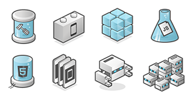

Phone Gap is a web based service provided by Adobe that builds multi-platform native mobile apps from HTML5, CSS3, and Javascript. This enables people with little programming knowledge to be able to make fully functional mobile applications with basic HTML knowledge.

This service is offered free of charge by Adobe given you obide by there requirements. For the service to be free, you must open source your work. This gives other people your source code and permission to copy and modify your work. For some, this is acceptable given the fact it's free. The other option is to pay for the service e and reserve the right to not open source your work.
How it works:
Phone Gap takes the web code you provide, wraps it in a container with native libraries for each platform, provides a bit of magic to finish it off, and then outputs your web code as mobile applications for the most popular platforms on the market.
All PhoneGap does is remove the sandbox and provides a JavaScript API to access the system components. You can think of the PhoneGap runtime as a custom browser designed to do nothing but service the HTML/CSS and JavaScript you have presented it with. You really can write the web app without any reference to the particular mobile device you are interested in, but the custom browser and how you get it to run your HTML, etc., varies according to the platform.
Supported Platfroms are:
- Android
- iOS
- Windows Phone
- WebOS
- BADA
- BlackBerry
- Symbian
There are instances where building a completely native app is better than using Phone Gap. Check out the links to find if this is the frame work for you.
Thanks for visiting

This art-work is licensed under a
Creative Commons Attribution-NonCommercial 3.0 Unported License.